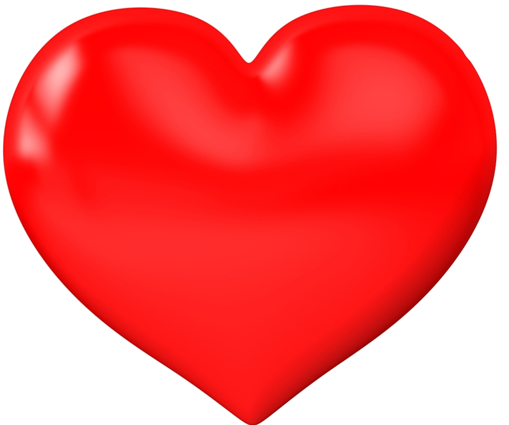

Valentine 
On this special day people tend to give mostly chocolate as a sign of love (doesn't matter which kind) or it could be a symbol of romance.
Along with the chocolates they give other gifts like a plushie or some flowers or sometimes some accoreries or beauty products.
However, if the gifts are for friends, they can be a bit more lightweighted. They can be things that could show how much you appreciate having them as friends.
It could be snack boxes or some pictures of you and your friends having fun together or an item that you all like in common which will make a great gift no matter how much it costs.